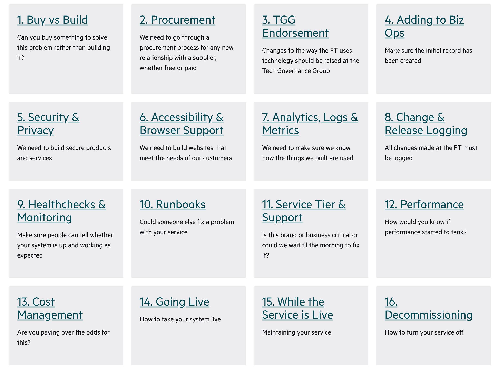
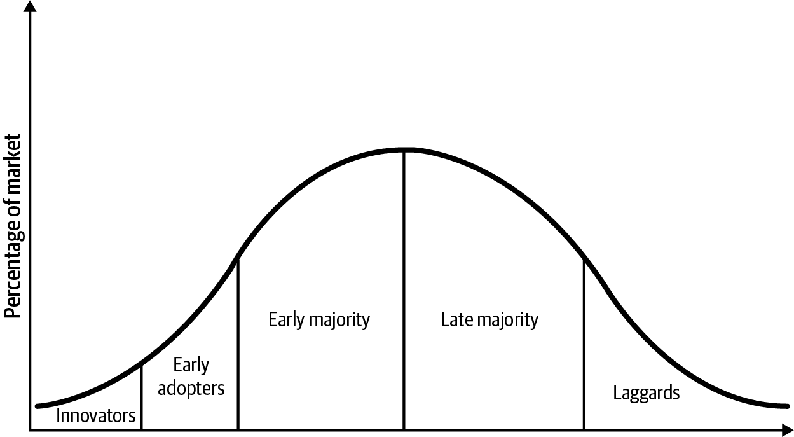
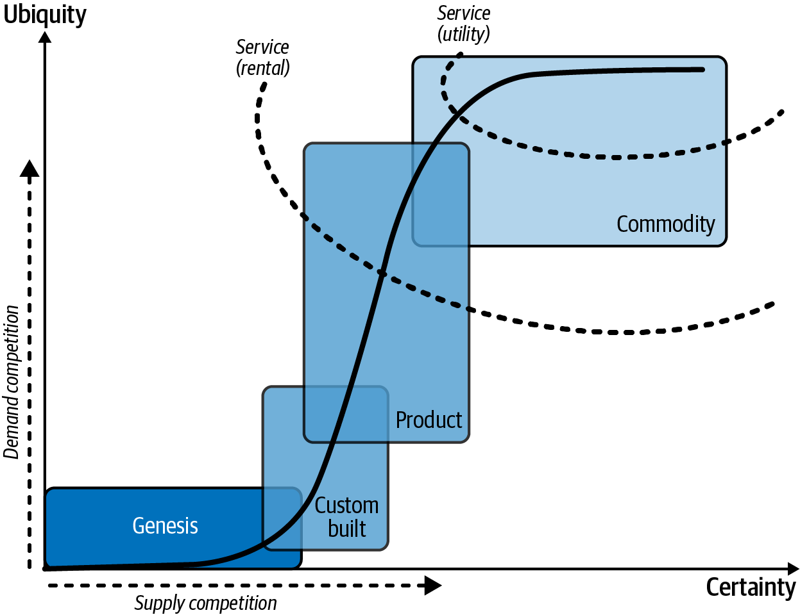
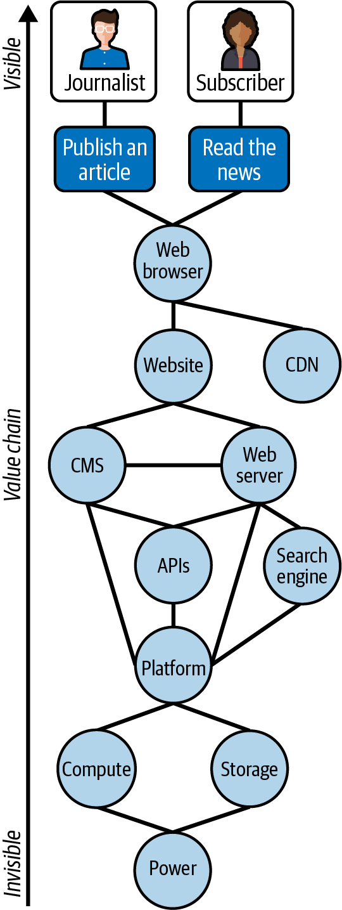
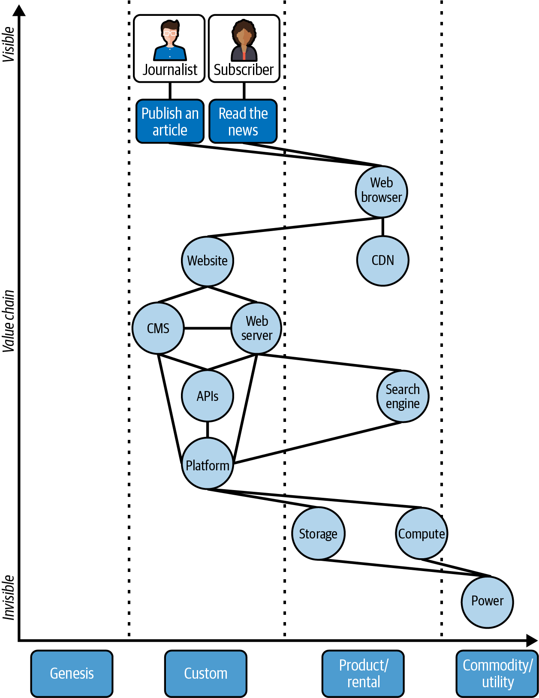

One of the selling points of microservices is the ability to choose “the right tool for the job.” But being flexible on programming languages or data storage layers increases the complexity of your estate, and can increase both cost and risk.
You need to find the right balance.
In this chapter, I’m going to dig into how to manage the process of making choices about the technology you use.
I want to start by talking about why you need to know your estate: what technologies are being used, and what versions. This is important because it helps you to keep on top of risks around security vulnerabilities and costs.
I’ll then move on to guardrails, which guide people to do the right thing and keep them safe. Guardrails are more effective than rules and restrictions when you have an autonomous empowered team. They help to make sure everyone understands what they are expected to do and why.
Finally, it’s good to show people where to focus their efforts: give them insight into the current state of their systems and provide guidance on what to do next to make things better. This insight also helps when you have to respond to issues—for example, subject access requests or security vulnerabilities.
But let me start by defining what I mean by governance and explaining why it’s important.
Governance is about reducing technical risk, and inevitably involves some level of standardization. This might not be about the technologies you use; it can also be about the expectations for any technology. What do you need to build into your systems if you are not using the paved road?
“Governance” sounds like it’s about someone telling you what to do, which makes it seem pretty unappealing! But governance is about defining what good looks like for your organization, making sure people know about this, and providing ways to self-correct when people aren’t doing things the expected way. It’s quite rare in my experience for engineers to deliberately fail to meet expectations; it’s much more likely that they are unaware of them. Good governance includes effective communication and reporting that allows teams to find out where they need to take action.
That final aspect of good governance—showing people where they need to take action—can be a challenge when you are operating a microservice architecture, because to do that you need to know what you have in your estate. However, with microservices you can have hundreds or even thousands of services, and there can be lots of different data stores, languages, and hosting solutions.
If you don’t know your estate, you don’t know where someone has deployed a service to production without proper monitoring or logging. You don’t know where someone bought a SaaS solution that has no support contract, no single sign-on integration, and no defined data retention policies, all of which could be accidental policy violations for things that handle PII data.1
Knowing your estate also involves understanding the libraries you use and their versions, so that you can work out whether a security issue in a library has been fixed everywhere.
Knowing your estate starts with ownership, discussed in Chapter 9, but as you move beyond that, it can be a powerful tool to keep control of costs and risks.
As I’ve mentioned in earlier chapters, at the FT we built our own system for tracking information about our estate, but I would not do that now.
You can get a lot of value from a fairly low-tech solution, for example listing all the services in a spreadsheet, along with key information about them. A spreadsheet allows you to constrain the choices for a particular column, and you can filter or search.
Your source control can be a great way to keep track of ownership. For example, in GitHub you can set up teams within the organization so that it’s clear who owns a particular repository. You can also use a CODEOWNERS file to define who is responsible for a repository—this can support a more fine-grained sense of ownership.
You may get to the point where these solutions become unwieldy because you have a lot of services to track. Luckily, as discussed in “A Service Catalog”, there are solutions available (for example, Backstage, OpsLevel, or Cortex) if you are prepared to spend a bit of time or money on this; you don’t need to build something.
Whatever you use, look to store as much information in it as you can, as being able to follow the links between data is very powerful.
At the FT, the core of the information we stored was about Systems (this represented individual microservices), Products (for example, the ft.com website, made up of many microservice systems), Teams, and People. For a reminder of what part of this graph looks like, see Figure 9-1.
But over time, we added a lot of other information. This included:
GitHub repositories. We imported information for all of them and where we could, we linked them to systems by matching the repo name and the system name.
GitHub teams. These didn’t always map to teams within the organization, so this was valuable to capture.
Incidents. We linked production incidents to the systems involved. This meant that when a new incident happened, we could easily have a look at the history and see if that gave us any clues. Incidents will be discussed in Chapter 13.
API Gateway keys. Those used by this system to make calls out to other APIs. This is useful in identifying a calling system.
What would provide value for your organization will be different, but my experience is that each new thing that gets added lets you ask more interesting questions, and allows you to automate some parts of the governance process—for example, bots to check that the values of tags on resources match the accepted list of Systems in the service catalog.
What are the things that your technology organization expects every team to do? How would a new engineer find out what they were?
I suspect for a lot of organizations, this is tacit knowledge. You find it out when you talk to someone who knows, or—even worse—when you get it wrong and there is a problem.
As I’ve discussed in Chapter 6, autonomy doesn’t mean a free-for-all. Teams have responsibilities too. Those responsibilities include building secure, cost-effective, supportable systems. But you don’t want each team to have their own definition of what “secure” means.
When I first worked at the FT, we had many policies and standards. These were generally defined by central teams, such as architecture, cybersecurity, or infrastructure. Policies and standards like these are the heart of governance because they set out the expectations within the organization. I can confidently say that most developers didn’t read these standards and may not have even known they existed.
However, because we worked within constraints of a small set of technologies, and generally handed over responsibility for deploying and operating our systems to another team, it didn’t matter whether I, as a senior engineer on an API team, understood our patching policy, to pick one example.
With the move to having teams choose their own technology, and deploying their systems to production and supporting them there, every team needs to understand what is expected of them.
I think it is good to think of this information as a set of guardrails rather than a set of policies or standards. They are there to support people and to stop them from hurting themselves.
At the FT, we eventually settled on approaching this as a checklist, covering the lifecycle of a production system.
These guardrails had a brief explanation of what was required and linked out to detailed policy documents.
However, there are very few people who will seek out and read a drive full of documents as part of onboarding—and even for those who do, there’s no easy way for them to work out that a standard has changed.
We tried wherever possible to incorporate the guardrails into the tools that we built, so that people would be guided to do the right thing even if they never read the guardrails. This particularly applied to tools that were part of the paved road, because part of the value of that is to stop teams from having to think about so many different requirements.
Some guardrails are more critical than others. If you work in a regulated industry or the guardrail relates to explicit legislation, then you want to go beyond guiding people to do the right thing, and make sure you are verifying that they have done it.
This is why guardrails become extra important, and teams do need to read the policies, etc., when a team builds its own solution for something. As part of going off the paved road, they have to make sure that their approach complies with the guardrails. That’s one reason teams should think carefully before going off road: they will need to do more work.
While guardrails provide a useful checklist for anyone building a new service, the real strength comes from automation, where they are incorporated into tools and services so that people can be automatically guided to do the right thing.
That means that you don’t need to rely on people reading the guardrails end-to-end, and you won’t need to worry about people keeping up-to-date with changes in the expectations, because you can change the automation and they will find out that way.
It also tackles one of the problems with guardrails in a sprawling software estate: how do you know whether every team is actually complying with the guardrails? You do not want to find that out via a security breach of a system that didn’t get patched, or through not being able to deploy a fix to a service because the team is “trying out” a new tool and no one actually available to help has access.
You especially don’t want to find that out when you are about to go through a compliance audit!
If you have templates or APIs for spinning up a new service, these should comply with the guardrails. For example, that service should be set up with a build pipeline that does security scanning, logs should be validated for formatting then automatically sent to the log aggregation tool, etc. Essentially, embed the guardrails into every tool you build.
Automation of guardrails lends itself to gathering data, which you can then use to get a view across the software estate to see how the organization as a whole is doing on a particular measure, and to nudge teams to take action where they aren’t doing the right thing.
I’m not saying everything should be automated. Some governance will be too difficult or time consuming to automate. However, asking yourself about whether automation is an option is a good approach to take.
What sorts of things should be included as guardrails?
We defined our guardrails as “the things we expect a team to consider so that we build the right things and build things right.” This meant the focus was on helping with the things that engineers don’t do all the time.
Guardrails should be a stand-in for a conversation with an expert, avoiding the need for coordination with people external to the team. Following the guardrails should produce systems that are safe, secure, and operable.
When considering your own guardrails, think about the path to production, your expectations as an organization around quality, security, and operational concerns, and look out for the things developers often ask about.
The FT’s guardrails around the time I left are shown in Figure 11-1.

We felt that engineering teams are familiar with the development lifecycle: code, test, review. We didn’t feel we needed to provide guardrails for these activities; rather, we trusted teams to handle that. We stepped in at the point that code started on the path to production.
The overarching aim was to make it easy for people to understand what good looked like, for the FT’s technology department.
We listed our guardrails loosely in the order you would need to tackle them if you were building a new service. And although there may seem to be a lot of them, in practice most of them were built into our paved road, and teams’ own tooling: most services would be created using a template for the application that sorted out things like logging, healthchecks, change logging, and security scanning.
OK, let’s dig into these.
They may not all make sense for your organization, of course. Later in the chapter I will cover the way governance is tackled in some other organizations of varying sizes and different levels of regulation, to add some breadth on this subject.
Can you buy something to solve this problem rather than building it?
Teams often jump straight past this step, but before you build something to solve a problem, you should see whether you can buy something off the shelf.
Every new service you add within your organization brings associated costs and risks. People focus on the cost of building something, but that can be outweighed by the cost of ongoing support and maintenance, so that needs to be included in the comparisons.
For things that aren’t core to your business, you should try to minimize the operational costs by getting someone else to build and run it. Many services are now available as SaaS, and this frees up your teams to work on things that are business differentiators.
There is also a third way: can you compose the functionality you need from a combination of existing software? Often, this is a question of building a wrapper to call one or more APIs and manage the flow around that.
You must go through a procurement process for any new relationship with a supplier, whether free or paid.
One of the reasons why people tend to jump straight to build rather than buy is that engineers tend to see procurement as a headache. Lots of forms to fill out!
However, procurement departments can be a fantastic partner. Personally, I am not good at negotiating a price, assessing contracts for risk, or evaluating whether a company is likely to be around in three years’ time. I’d like to pass that over to someone who will do a much better job of it.
At the FT we had an excellent procurement team that understood the way engineering teams want to work. There was a lightweight process for proof of concept (POC) work, with the aim of keeping up-front form-filling to a minimum.
We still needed to remind engineers that no, they shouldn’t be signing up using a company credit card, or even starting a free trial, without letting the procurement team know.
This allowed procurement to spot issues early—for example, where teams appeared to be buying a direct equivalent of something that already existed at the FT without a clear case for why.
Significant changes to the way you use technology need to be discussed.
This guardrail is an attempt to prevent unnecessary introduction of new technology. Each new technology involves associated costs, and sometimes, people introduce a new technology solely because they don’t know that there is already something available that would work for their use case. You also want to know whether someone already tried to use the technology and hit issues.
At the FT, we used a forum called the Tech Governance Group (TGG). This was a lightweight process intended to make sure there was open discussion of significant changes in how the FT used technology. I’m going to talk about it in detail later in this chapter.
Make sure the initial record for the service has been created.
When you have a large number of services, keeping track of them is hard. You can automate following up on missing information, as long as you have a basic record of the service.
We really wanted every service to have a Biz Ops record, because that is what gave the graph of information its power.
The initial record was short, with only a few fields required. Systems were created in a “Pre-production” state. Moving them to “Production” state, part of the process of going live, prompted teams to fill in more data, but that initial record was enough to get a lot of value.
We had a high level of compliance with this guardrail because we used the unique system code for a service in a lot of places. AWS resources were tagged with it; it was output in logs; and it was used to create alerts and monitoring and link that into the appropriate team dashboard.
Setting up an initial Biz Ops record was the way to get that system code.2
You need to build secure products and services.
Security and privacy are two areas where the expertise of an enabling team is needed. Those teams can define what other engineering teams need to do and make it easy for them to do that.
At the FT, our security engineering team defined the security tooling, with security scanning of various types, including in deployment pipelines. Teams were expected to make sure their systems incorporated the tools (and we could visualize where this integration was missing).
At the FT, we also tried to capture information about systems with particularly sensitive data early in the process: there were fields in Biz Ops to define whether a system handled personally identifiable information (PII) because that has GDPR implications, i.e., if you get it wrong, it can cost a great deal of money.
We could then do things like preventing any S3 buckets tagged with a PII-containing system code from being set up as public.
You need to build websites that meet the needs of your customers.
As with security and privacy, accessibility is a skill that not every team will have. This guardrail provided information on how to build an accessible website.
We also wanted a single place to define which browsers should be supported, so that engineers understood what they needed to handle, and so that testers could ensure appropriate coverage.
You need to make sure you know how the things you build are used.
Analytics, logs, and metrics all draw a lot of value from being able to join them together. You don’t want to find out during a security incident that the logs for the affected service are sent to a completely different logging destination that was set up by the team, and you can’t get access!
This guardrail also gave guidelines on how to decide what to log, and what metrics to capture.
When I first started work as a developer, the logs I wrote were generally something I used when I was working locally. I had a lot of debug logs I could turn on (if I wasn’t using a debugger), but very little logging at other levels. If there was a problem in production, I would probably try to reproduce it locally.
In a microservices world, I found that much more difficult, and I really started to see the value of logging decisions made at a log level that was always output. That was something I had to learn through painful experience; it’s better to guide people by documenting expectations about what you should log.
Alongside that, this guardrail was the place we specified the format for logs and the information we wanted to make sure was included. For example, structured logs made up of key-value pairs allowed much more powerful queries in our log aggregation tool, and fields like a system code, and a correlation ID that uniquely identified the request, were also super useful when trying to dig into what might have happened (we didn’t have specific observability-focused software in place, so a lot of my debugging happened through log queries!).
Similarly, with metrics, this is the place to define the metrics every system should produce, to give a global view of the health of the estate.
All changes to production must be logged.
You really want to be able to tell if a system stopped working just after a code release. At the FT we had a Change API that could be pretty easily wired into the standard deployment pipelines—among other integrations, the team that wrote it created a CircleCI Orb, which made it easy for many teams to include this.
We expected teams to call the Change API when code went to production. Every change notified in this way was written to a number of different locations, including a Slack channel and our log aggregation tooling. This made it easy for anyone to see what had changed around the time of a problem in production.
We also found value in writing infrastructure as code changes into the same system—for example, changes to our DNS setup. This gave us one place to see what just changed in production.
We wrote our Change API with a view to easily writing something to it, and easily consuming it. The architecture is described in Nikita Lohia’s blog post on “The Advent of Change…API”. The architectural choices meant that a proposal from the web team to write feature flag changes into it and to have those sent through to the data platform was entirely possible without Nikita’s team having to do anything.
Make sure people can tell whether your system is up and working as expected.
Monitoring gets a lot of value when there is standardization, i.e., you can find the monitoring in the same place for every service, and the checks look similar.
This guardrail defined what healthchecks should look like. This is discussed in a lot more detail in “Healthchecks”. It also defined how to surface monitoring in our team dashboards and in the main FT operational dashboard.
Could someone else fix a problem with your service?
We wanted every service at the FT to have a runbook that provided information to help anyone trying to support that service in production.
The focus was on information that would help when troubleshooting. For example: where is the code? Where is the service deployed? Can it be failed over?
We worked with our first-line operations team to define a standard template for a runbook, focusing on the information that someone who’d never looked at this service would need, which is also often the information that someone looking at the service for the first time in a couple of years would want to see.
This included information about the service level for the service: would this require an out-of-hours callout if it broke? We documented whether the service ran active-active or active-passive (where there are two regions, are they both serving traffic or is one of them on standby, only to be used in the case of failure?), and any failover mechanism. We had information about how to restore a backup of any data. There was information about where to find the source code, logs, metrics, and monitoring. We also included any useful troubleshooting tips.
Our runbooks were actually a subset of the information held in Biz Ops for a service. You edited the Biz Ops record, and there was a separate runbook view that was more highly resilient than Biz Ops itself (to avoid having to run a graph database across multiple regions: the runbook data was extracted and written to S3 regularly).3
As discussed in Chapter 7, in the early days of adopting microservices, our runbooks were generally not in a great state. There was a lot of missing information.
We automated scoring of the quality of each runbook (acknowledging that we wouldn’t necessarily get the weightings right the first time). This helped us get to the point where the information was generally there. Then the challenge changes, because it’s a lot harder to automate the checking of the accuracy of the information and whether it’s up to date. We did, however, add a check in the scoring so that “TODO write this” didn’t count!
At the point where most runbooks existed, we went to a more manual process of annual reviews of the runbook information for our most critical services, to validate its accuracy.
Is this brand or business critical or could you wait until the morning to fix it?
Deciding what levels of resilience and redundancy a service requires, and what level of support, has consequences in the cost to build and to run it. Often, the discussion is left until late in the build cycle, and you only find out the different expectations from the team and the stakeholders when you are weeks or even days away from going live. That can put pressure on teams to support something out of hours that wasn’t built with resilience in mind.
For example, if a service needs to be highly available, you probably need to have it running in multiple data centers or cloud regions. Running an architecture that spans regions is more complicated than one that runs in a single region: multiregion database clustering is not straightforward. There is also the additional complication of dependencies. If your new service needs to be highly available but depends on a service that isn’t, you might get more incidents than you were anticipating.
At the FT, we defined four service levels: platinum, gold, silver, and bronze. Platinum systems were highly resilient and supported 24/7, bronze systems were not.
This guardrail tried to provide heuristics for deciding on a service level, and was clear about the consequences of choosing it. You couldn’t require out-of-hours support without also meeting the enhanced resilience requirements associated with the platinum-level service tier—because you should not expect engineers to support a system 24/7 unless you invest in resilience!
At the FT, we could only do this because we had buy-in from senior leadership across both engineering and product. There is always pressure to launch something quickly and sort out resilience later—and sometimes, that’s acceptable, but you do need to accept the additional risk of things going wrong. However, I’d think of this as providing additional support for a bronze tier service, and expect there to be some discussions with the team members to line that up in a way that worked for them.
How would you know if performance started to tank?
This was a reminder that performance of a service matters, and that knowing when it changes also matters. Beyond that, it was also a reminder to have the conversation with your stakeholders about what performance would be acceptable early on in the process of building your services.
Are you paying over the odds for this?
Running in the cloud gives engineers a lot of flexibility, but it also means engineers can spin up resources without having to consider costs.
Cost management starts with sensible defaults for the infrastructure you spin up, and this is somewhere that a central team can make an impact—for example, by switching the platform to use new types of processors as they become available.4
Tooling to surface the costs to teams and leadership is really useful, because teams without this visibility may be incurring costs that they could easily cut through reducing the amount of logging or scaling down overprovisioned servers. To do this, you need accurate tagging of your resources so you know about ownership, but that’s a great idea for many reasons, as discussed in Chapter 9.
It’s important to catch where you are spending more to build and operate a system than you expect to make in revenue from it. A rough total cost of ownership (TCO) calculation can really help here. It doesn’t need to be exact, just in the right order of magnitude. For example, you can assign a cost for how much it will take to build a service, based on time and team size and using a standard day rate. You can assess ongoing cost to maintain it once it’s built. You can look at the cost to run the architecture.
At the FT, we found TCO calculations could work in a way we didn’t expect: for example, we had an old system, written in a programming language we no longer used, by a team that no longer existed—meaning there was no active ownership and no obvious team to take it on. There was a risk in having this out-of-date system and there was no appetite to rewrite it. Before decommissioning it, we ran a TCO calculation, which showed that the amount of advertising brought in by this one component made it super profitable! That prompted a decision to invest in rebuilding the system and finding it a proper home.
I could imagine using a cost management guardrail to show current resource costs and alternatives that would save money: for example, switching instance types, or changing the architecture to avoid moving large amounts of data around. All of this could be automated.
How do you take your systems live?
It’s easy to forget steps in the process of finally putting a new feature or product live.
This guardrail provided a mini-checklist that included steps like filling in the rest of the Biz Ops service record, creating operational runbooks, documenting any known technical debt, and doing a handover to the first-line operations team. These are things that could easily be forgotten by a team in the rush to get over the line but have the potential to cause issues later on.
Maintaining your service.
Services need a bit of ongoing care and attention—for example, fixing security issues picked up via scanning tools; upgrading versions—ideally before the version reaches end of life; and testing the backup and restore process for a data store.
Again, it’s good to provide a checklist. Even better is to capture this information automatically so that you can flag areas of concern.
For example, the FT created dashboards that brought together a view of known security issues, particularly focused on high-level vulnerabilities that were beyond the target time to get a patch deployed.
We also stored information about programming languages. We could look at our source control, search for out-of-date versions of a language, then follow the link from the repositories affected to the services (not entirely smoothly, but we could do it!).
How do you turn your service off?
It’s easy to miss steps in decommissioning. Anything left behind can be a security risk and it can be an ongoing cost.
This was (yet another) mini-checklist covering steps beyond turning the service off in production.
Has it been removed from monitoring? Have related DNS entries been removed? Has the service been set to “Decommissioned” in Biz Ops? Have the infrastructure resources been shut down?
The aim was to make it easy for people to know what they needed to do, even if they had never done this before.
The original guardrails and policies at the FT, setting out expectations for what teams needed to do, were defined by our Architecture group. They were comprehensive and well-thought-out, but—as someone leading a development team at the time—they didn’t feel embedded in our practices. The switch to present them as a checklist made it much easier to work out what my team needed to do and to find the relevant information.
That switch came with a big communication campaign: posters, presentations, emails, Slack messages. We understood that these things were our responsibility, as a result of the autonomy we were now benefiting from.
Over time, architecture moved to become something that people did rather than a role people held. Architecture happened within every team, and there was no longer a separate group to define guardrails top down.
What we had instead was a forum to discuss and agree on technology decisions that would have a wide impact, which we called the Tech Governance Group (TGG).5
The FT’s Tech Governance Group was set up to review significant technology changes at the point where enough information was available to assess them: generally after some investigation, potentially proof of concept work, and some planning, but before a large investment of time and money.
The TGG process had three main purposes:
Providing a clear and lightweight process for people to share ideas, receive feedback, and get endorsement to proceed
Making it easy for other people to know about upcoming topics and if relevant to provide input into those decisions
Allowing people to go back and discover why a particular decision had been made
I’ll unpack those a bit to explain the value, but first I want to talk about the format of the meeting, and also which technology decisions were expected to be brought to TGG.
I should note that this is essentially meeting the same need as architecture decision records (ADRs) and requests for comment, and drew on ideas and formats from these.6
TGG defined a structure for a technology proposal, available as a template document. The aim was for this to be lightweight, and for the structure to help people fill out a proposal in a consistent way.
The proposal template included:
The authors of a proposal, whether an individual, team, or any other group of people. These were the sponsors of the initiative and were accountable for it.
The problem that needed to be solved. This should cover what was not working about the current status quo and the opportunity for improvement. This was also a place to declare what was in or out of scope for the proposal.
The authors’ preferred approach.
Known limitations and/or risks with the proposed approach, plus any possible mitigations.
What or who would be impacted by adoption of the proposed approach, whether positive or negative.
Any expected CAPEX and OPEX costs to implement and sustain the proposal. This included supplier contracts, licensing, and any expected on-demand infrastructure costs. If people were required to implement the proposal, a range or estimate of the number of people and duration required should be provided. This was probably the section where engineers struggled the most, but it’s a key part of the decision-making process to understand the cost!
These could be quantitative (e.g., monetary or time savings) or more intangible (e.g., positive impact to morale, or risk mitigation).
The alternative options that had been considered. We required a “Do Nothing” option, because this helped us understand the underlying need better.
Typically, this would be two or three pages of content.
Proposals were circulated in advance of the TGG meeting via public Slack channels and GitHub issues. The hope was to circulate at least a week in advance, but it could be shorter if the proposal was urgent or short. The point was to give enough time for people to read and comment.
We were very clear that it was the responsibility of the authors of a proposal to make sure that proposal was reviewed by the right people. Generally, they’d have an idea of who would care, and could contact them specifically to ask for feedback. That could include feedback from groups outside engineering, where applicable: for example, compliance, finance, or security.
The FT had multiple groups of development teams that operated pretty independently, each led by a technical director. Each group was expected to send a representative to the TGG meeting, usually one of the principal engineers within that group. If no one attended the meeting from a particular group, they were presumed to endorse the proposal: it was their responsibility to make sure they had people there if they cared about a proposal.
Although I hadn’t read this at the time, this closely resembles the ideas that Andrew Harmel-Law lays out in his post “Scaling the Practice of Architecture, Conversationally”.
Andrew defines an Architecture Advice Process as:
The Rule: anyone can make an architectural decision.
The Qualifier: before making the decision, the decision-taker must consult two groups: The first is everyone who will be meaningfully affected by the decision. The second is people with expertise in the area the decision is being taken.
And this is exactly what we had at the TGG. The proposers had to consult the people affected, and the proposals were circulated widely and publicly, giving those with expertise the chance to contribute, without the proposers needing to know who those people might be.
“People with expertise” can be subject matter experts (e.g., someone with Kubernetes knowledge) but it can also be people who have tried to tackle the same problem, who can likely tell you about what did and didn’t work, and hopefully stop you from building something that already exists, or that the organization already knows won’t work.
I remember reading that some organizations hold meetings to make decisions, and other organizations hold meetings to share decisions: the work happens before the meeting. In my experience, you can have both types of meetings in a single organization, you just need to understand what type this particular meeting is.
The TGG was a meeting to endorse the decision that was pretty much already made. The work happened before the meeting, because we asked anyone who was going to actively participate in the meeting to raise concerns or questions in advance, on the proposal document.
In my time there, I think we had one or two proposals that did not get endorsed. We had a few that had to go away for amendments. But well over 90% of proposals got endorsed.
So why hold the meeting? Partly, it is a shared experience that this is being endorsed. But also, and this particularly worked once we were all working remotely during the pandemic, anyone could attend to observe the meeting, and at times we would have as many as 30 or 40 people involved. All those people heard about the proposals, so this was a great way to communicate the details. They also saw how to discuss architectural decisions and the kinds of points that got raised. The meetings were very actively facilitated and minuted. I feel that they really showcased our engineering culture.
It’s costly to get a lot of people into a room for an hour, and this is the sort of synchronous collaboration that you want to minimize. However, it’s more costly to make a bad decision on something with broad impact.
To try to find the balance, we didn’t require TGG signoff to start work on a proof of concept. Often, people wrote a proposal and started work alongside the process of getting feedback (it’s easier sometimes to get feedback on something that is more concrete). But we expected a TGG proposal for any changes that:
Had a broad impact. This typically meant where more than one group within engineering would have to invest significant time or money, or make major changes to their processes or technologies used as a result of the proposal (moving between source control providers, for example). Often, these were strategic changes.
Cost a lot of money. Particularly important with recurring costs—for example, adding a tool with annual license costs.
Went from being local to being global. Where something used by one engineering group is beginning to be adopted by others is a good time to discuss whether this is the right choice.
This was not an exhaustive list; we told engineers, “If you think a proposal should come to TGG, bring it.”
Deciding to bring in a new technology is not just about that technology. There are other considerations.
If you need people with particular skills to be able to make the most of adopting it, can you find people with those skills in the market? Are they more expensive to hire? Will your existing engineers want to learn this technology?
And although I am talking mostly about engineers, we made a point of asking other people to TGG where there was a potential impact outside engineering.
OK, back to the benefits of TGG. What made this effective?
The TGG process was lightweight: write a two-page proposal in the format mentioned a few sections ago, check it into a GitHub repository, and attend the next meeting.
People would still push back on bringing things to TGG; however, my view is that if you won’t invest the time to write a two-page proposal, you shouldn’t be introducing a major technology change!
TGG spread understanding of what was going on across the technology department, meaning fewer nasty surprises when a team found it was duplicating something some other team had already done.
Even where people have written up architectural decisions, it can be hard to find them. When I stepped up to lead the content platform team, I couldn’t find much written discussion on introducing containers even though I’d been in the team at the time!
The benefit of TGG was that there was one place to find proposals, and one format.
There’s a great history of architectural decision-making from Olaf Zimmerman that digs into the reasons why it’s important to capture decisions, and discusses various different formats.7 The key thing, in my view, is to be able to answer the question that often comes up with new colleagues, or even yourself, three years later: what on earth were they thinking?
There were two main sources of proposals to the TGG. The majority of proposals came from the Engineering Enablement group, and involved changes to the paved road or to guardrails.
This helped to involve engineers from throughout the organization in the decision making, so they didn’t feel so much that it was done to them.
The second source of proposals to TGG was related more to autonomous teams and their freedom to choose tech. Whenever those choices could have a broad impact, we asked for them to be brought to TGG. While supporting team autonomy, those choices do need to be made in public and sense checked.
If you think about the technology you are using right now, it’s almost certainly not what you were using three years ago.
Things are constantly changing. New innovation provides new capabilities or better versions of existing capabilities.
For example, the public cloud offered us an alternative to self-hosted data centers. Recently, the arrival of LLMs opens up new options.
But how can you make decisions on when to introduce a new technology? What are some heuristics?
I want to start by introducing two different ways to think about the lifecycle of a technology. I find the maturity of a particular technology is a key aspect in considering whether to adopt it and assessing the potential benefits and risks.
First, I want to talk about the technology adoption lifecycle, shown in Figure 11-2. This models how new technology gets adopted and is a bell curve: small numbers of adopters early on, growing as people become convinced this is a safe bet, with small numbers making the move later on.

There are five main categories of adopter—innovators, early adopters, early majority, late majority, and laggards:
Innovators love trying new things, and are happy to take a risk that it might not work out. If you are considering adopting a technology when it is in this stage, you may not be able to find many resources to learn from: no one has yet written about this or spoken at a conference. There aren’t many answers on Stack Overflow. You will probably find that the associated tooling doesn’t exist or isn’t very mature. You might find that this particular technology never makes it to widespread adoption: that may mean you need to move to an alternative a few years down the line.
At the early adoption phase, there is enough information out there for people to feel relatively safe in trying out the new technology. It may still be a bit fiddly to use, but the risk of failure is lower; there are people who have managed to make this work.
By the time the early majority are looking at a technology, there are case studies and real-life reports about using this technology. It’s become clear what the actual benefits are going to be, beyond being new and shiny. There will be help and potentially associated tooling available.
By this point, the technology is well established and well understood. It’s not particularly risky to adopt it, and it likely feels like standard practice.
When the last people are adopting a technology, it’s likely that innovators have moved on. It’s low risk, and potentially low reward: your competitors have likely already adopted this technology if it solves a problem for them.
To illustrate this with an example, let’s consider containerization. When my team at the FT started to use containers in 2016, the technology was not yet production-ready. We were early adopters and for cluster orchestration, we were innovators: we built our own. Later, Kubernetes matured, we saw innovators being successful using it, and we moved to it as early adopters.
The second way of thinking about the lifecycle of technology that I want to introduce is one that Simon Wardley developed, where he plots technology (see Figure 11-3) in terms of the level of certainty against the level of ubiquity.

When a technology first appears, it is rare, and whether it will work out is uncertain. If it is successful, it will gradually seem to be a better and better bet—the certainty will increase; and more people will use it—the ubiquity will increase.8
There are four phases to this curve—genesis, custom built, product, and commodity:
This technology is novel and rare but exciting. People write about its potential.
People start to use the technology and learn about it. People write about how to use it.
The technology is more widely used. People write about how to operate and maintain it.
The technology is everywhere; the use case is understood. People write about what can be built on top of it.
This clearly maps onto that adoption lifecycle in Figure 11-2: a new technology starts off as something for experts (innovators), where you have to build it yourself. Then, as it matures it will be adopted by more and more people, becoming ubiquitous. The interesting addition is the idea that as a technology gets better understood and used by more people, it is likely to be turned into a product that you can rent or buy, and then eventually a commodity.9
This seems quite intuitive—and an example would be around compute resources. The first computers were custom built, then you could buy a prebuilt computer. Now, you can rent a computer (the cloud) or even rent just compute cycles (serverless).
Going back to my example around containerization: initially, we custom-built our own cluster orchestration. In time, people created a product—Kubernetes—that we could install and use. Now, the FT’s containers run on EKS, a managed Kubernetes from AWS, which is moving toward commodity.
There are a few considerations around the stage a particular technology is at, on both these lifecycle curves (Figures 11-2 and 11-3).
For immature technologies, where you have to build something yourself, you are taking on a high level of risk—if it doesn’t work out, you may have to move to a different solution—but you may get a high reward if successful, because your competitors may not yet be benefiting from this technology. However, whether that makes sense for you depends on your team or organizational culture: are people going to be comfortable with figuring it all out, and that things might go wrong?
At the other end of the scale, if something is available as a commodity, then there isn’t a lot of risk adopting it. Likely, there isn’t a huge reward either as many other people will already be using it. This is table stakes, and normally if you can buy something as a commodity, you should. However, you still might choose to build a better alternative, especially where you realize the alternative is ending up with a hodge-podge of different vendor tooling that almost but not quite meets your needs.10
You should also be careful not to buy an off-the-shelf product if you have to heavily customize it to meet your needs.
And of course, it also depends on what alternatives there are, i.e., what your alternative choices could be to develop the capability you are interested in.
However, I think these two models help in setting out the context for the next couple of sections, where I want to talk about saving the innovation for the things that matter the most to your business, and that boring technology is good.
You generally should only build something when there is a product available if this is a business differentiator for your company, i.e., building a better implementation will be core to your business.
This is where another type of diagram from Simon Wardley—Wardley Maps—can be useful. Wardley Maps start with a value chain that links users, needs, and capabilities.
You start by looking at the visible value you offer to your customers. What are the things your company does for them? At the FT, this would be providing news via the printed newspaper and website. Each of those things is built on other technologies. For example, the website runs on a platform, that uses compute, that relies on access to power. See Figure 11-4 for a simplified value chain for a newspaper.

You should focus your innovation on those things that are most visible, and that matter the most, to your customers.
That means you probably shouldn’t build a different way to do continuous integration because that is a problem that has many solutions that you can rent or buy. You might build something that is 5% better for your use case, but then you also have to maintain it. Investing that time in something that is a differentiator for your business is likely a much better bet. There likely isn’t a solution you can buy or rent for that!
When you combine a value chain with the technology evolution cycle discussed in the previous section, you get a Wardley Map, and it gets even more interesting (see Figure 11-5).

It’s likely that the stuff at the foundations of the value chain map is a commodity.
The stuff in the middle is probably a product—and you can and should buy it off the shelf.
The stuff at the top and left is what you should be building; this is where you should focus your innovation, particularly if it provides a competitive advantage.
But it’s worth noting that things also move. Things that were custom become available as products once they hit a level of popularity. Then, they can become commodities. Going back to the example of compute, we used to buy servers and rack them, then we paid for servers in the public cloud. Now, we run code using serverless options: compute is a commodity.
The nice thing about boringness is that the capabilities of these things are well understood. But more importantly, their failure modes are well understood.
Dan McKinley11
When you build something yourself, you can’t easily get help from anyone else. There won’t be any blog posts or answers on Stack Overflow that tell you how to get past a particular problem.
It can be worth building something yourself when doing that is high risk, high reward, where there are no product or commodity options available. If you do it well, you get ahead of your competitors.
The potential reward for building your own cluster orchestration (to pick something my team actually did) isn’t high enough for this to be a good decision, now that there are products and even commodity solutions available. It may not have been the right decision to adopt containers when cluster orchestration wasn’t available as a product or commodity: while my team at the FT saved money in running our microservices, what else could we have been building instead of our own cluster orchestration? There is always an opportunity cost to consider.
Similarly, if you adopt a product that is new to the market, you can get an advantage, but that is associated with additional risk. New and innovative technology fails in new and innovative ways. The capabilities aren’t necessarily well understood, and neither are the failure modes.
I don’t think engineers tend to think enough about risks when looking at a new and interesting technology, or rather, they don’t think about long-term risks. We generally spend a lot longer supporting systems in production than we do building them. If you choose a bleeding-edge database, how confident are you that the company that built it will still be solvent in three years’ time? That the company won’t have been acquired and the database shut down? Do you have a plan for if that happens?
Moving to a new database is much less of an issue in a microservice architecture. Far less of a big-bang move. So the risk may be absolutely fine for you to take, but you should at least weigh that up.
Other things to consider are cost and security. A startup may give you a discount now, but put the price up steeply three years in. They also may not have the same level of security maturity as an established company.
As Dan McKinley says, there is a lot to be said for choosing boring technology. Boring doesn’t mean bad, it means things where you understand the failure modes. You can Google for answers.
Dan points out that there is a limit to the amount of new and innovative stuff you can do at any one time and still be successful. You should think about it like you have a limited number of “innovation tokens.” What are you going to spend them on?
A brand new data store: one innovation token. New programming language: an innovation token.
If you spend it on writing cluster orchestration, you probably aren’t spending it on something that delivers new business capabilities. That’s a bold choice. It was one that on the whole, I think was justified for my team at the FT, but it definitely meant we focused on tech rather than product for quite a while.
In general, you should use established tech when you can, but you should also in most cases choose to use tech already in place at your company.
That’s because adding tech to the estate comes at a cost. You have to understand it, you have to support it, you have to operate it in production. You have to hire in a way that maintains knowledge of all the tech in your estate, and train people who move around.
The marginal benefit of, for example, adding a new programming language to the stack that is better for a particular problem space is almost certainly outweighed by the additional complexity. Additional programming languages mean that teams creating libraries have to add a new one, in a language they likely don’t know.
I do want to point out that doesn’t mean sticking with the same programming language forever: you should move, but you should try to keep the number of languages in use at any one time in check.
Just because something is in use doesn’t mean it’s any good. You don’t want a team to adopt a technology that is in use but that no-one is actually enthusiastic about.
Another example: let’s consider a team that moves to a different CI/CD pipeline—for example, from GitHub Actions to AWS CodeDeploy. The team is likely to miss out on any new capabilities added to the centrally supported pipelines—for example, DORA metrics tracking.12
The trade-offs are where the TGG process can add value: you can work out what is already in use, and carefully consider the benefits and the costs for a particular use case of going off road in a new way.
To quote Dan McKinley again: “Adding the technology is easy, living with it is hard.”13 You have to think about installation and deployment, upgrades, scaling, backup and restore, logging, metrics, training for engineers, etc.
Being in the public cloud, and using serverless tech, changes the equation a bit: if you don’t have to manage the database, there is less new stuff to understand. It’s still an overhead to add new tech though!
One further comment. If you do decide to add something new, you should think about what you can remove too.
When a team adopts a new technology that duplicates an existing one, there are three choices. You can have that team support the new tech, as a local optimization, indefinitely. I can tell you that several years in, the people now on the team may be a lot less enthusiastic about this.
Second, you can see how it goes, and if it is successful, move it to be owned by a platform team. That potentially increases the cognitive load for that team (because it’s rare that you’ll hire a new team), but that might be fine.
Third, you can decide this is a better option, move it to be owned by that platform team, and migrate everyone else to it too. If it is better, that will probably be OK, but there is generally a long tail; teams who haven’t quite got round to migrating because they have other commitments. It takes support from leadership to make sure that the migration does, finally, finish.
There will always be some places where duplication really isn’t an option; for example, you might decide that introducing an additional programming language, cloud provider, or monitoring system is too costly, risky, or complicated. You may move the whole organization, but you don’t want to have one or more teams choosing an alternative.
It’s a good idea to spell these things out, in your guardrails or your platform documentation.
You should expect things to change. Choosing well-established technologies can leave you in a better position than opting for brand new and experimental tech, but we are not all still writing COBOL.
Which means you should try to make decisions that are easy to change later on.
Microservices can help with responding to change, because it’s easier to try new technologies in a small area of the system, and migrate other services over time.
You won’t be able to standardize once and stay on that exact stack for many years. Your aim should be for people to know what the current stack is, and to make migrating to something new into an easy process where people get lots of notice and help.
To know what the current approved stack is, I’ve found a Tech Radar (introduced in Chapter 6) to be very useful. A Tech Radar lists technologies with a recommendation of whether to Assess, Trial, Adopt, or Hold that technology. And the original Tech Radar from Thoughtworks, updated quarterly, is a great way to pick up on technologies that you should be considering adopting, or moving away from.
When you know what is in your estate, and you have automated your guardrails, you have a powerful tool that can provide insight into the current status of your software estate.
This allows you to guide teams on what to do next. I’ve already mentioned the SOS system, which looked at runbook information and told teams what they should fill in first through the scoring system.
At the FT, we also built tools that gathered together information about the known security issues: again, prioritized to show what to fix first.
Insights into your estate also help when you need to respond to issues. For example, a subject access request means you need to find all the systems that store personal data: the FT flagged this in Biz Ops.
Someone needs to respond to issues like Log4Shell (discussed in Chapter 9), and insights across the estate really enable that. This is a key part of governance: teams may be autonomous, but your legal and compliance teams, and your technology leadership, want to know that someone is checking across every team when there is something critical that needs to be responded to.
Investment in visualization makes it far easier to respond to questions like “How many of our services depend on this vulnerable library?” or “How much effort to migrate away from this tool that has just tripled its prices?”
This chapter has been very FT-focused and I realize that not every organization is the same. So I want to talk about a few other organizations and how they tackle governance. Thanks to Suhail Patel and Stuart Davidson for taking the time to read this chapter and give me their insights on how governance works at their organizations.
Monzo is a challenger bank in the UK and well known for running thousands of microservices and releasing code frequently in a heavily regulated industry. There are 300+ people in the product and technology group as of 2023. The company has been around for eight years and is a scale-up.
Monzo’s philosophy is that risk and governance is the responsibility of everyone, and mandatory yearly training reminds people of this.
Formally, Monzo has a standard first/second/third line of governance in line with most other financial institutions. It embeds first line within groups of teams in particular domains, and there is direct communication between engineers and folks in that first line of defense. These first-line folks are effectively the Collective Partner that navigate Risk Management/Registers, representing in Risk committee reviews and sessions. More generally, they provide guidance to engineers on a day-to-day basis.
The embedded model works well and these governance experts are very much a part of the group and involved directly in squad channels and calls and helping navigate complex decisions. That visibility makes it more human than just a paper form and/or the odd occasional call.
Company wide, Monzo has defined policies around Change Management, Third Party Suppliers, Break Glass,14 Incident Management, and much more. All of these are written in plain English, are kept to a maximum of two to three pages, and are part of yearly mandatory training. This keeps the policies fresh in people’s minds, and the annual review means people know if changes have been made to existing policies.
Monzo invests extremely heavily in tooling to mandate its policies, especially around code reviews, deployments, and changes making their way to production. The company allows engineers and teams a lot of freedom to decide criticality of changes and self-govern within squads.
Monzo, like the FT, has service tiers that reflect how critical a service is, and the level of automated controls for a particular service—things like multiparty approval and authorization for changes—depends on whether that service can impact important business services. The closer to critical capabilities, the more restrictions and automated controls.
The goal is to take a risk-based approach, with few blanket restrictions. To ship a new microservice to production or make a change to an existing one often only needs approval from a peer on the team that owns the service.
Monzo has a culture based around proposals for changes. Engineers define the scope and context of a change, and there is an architecture review process for cross-cutting changes that allows input from other engineers. This is about ensuring deep scrutiny before making a change that would be hard or impossible to reverse, rather than a sign-off meeting for changes.
For major technology changes, such as moving to a new data store or migrating from self-hosted Kubernetes to Amazon’s EKS, there is a formal Major Tech Change process. Every group within the organization will be notified and there will typically be a conversation with the regulator to give them notice of the upcoming change.
Monzo builds in automated guardrails to avoid risks. These include:
A single employee can’t deploy to production without someone else seeing the change.
It’s hard to ship an API that doesn’t have authorization enabled.
It’s difficult to deploy a service that isn’t using the standard technical stack, going through the standard deployment pipeline, and with code in the Monzo monorepo.
Within engineering at Monzo, the overarching philosophy is to make guardrails feel seamless and out of the way for the day to day, either letting tooling that is instant and objective take care of it, or taking a risk-based approach depending on blast radius. These tools emit tons of audit logging for decisions that Monzo can inspect and evidence with auditors. Across the board, Monzo doesn’t want to slow engineers down for their standard day to day, unless it will literally take down the bank.
Skyscanner is a global travel company based in the UK. Like Monzo and the FT, it has a microservice-based architecture and releases code frequently. There are 1,200 global employees and Skyscanner is post scale-up.
Skyscanner only allows AWS changes via CloudFormation, and has a rules-based system in place called CFRipper that automates applying a set of rules against infrastructure changes and is a mandatory step in any build pipeline.
There is also a metadata service for registering services, and if there is no metadata in the repository or the service can’t be found in the metadata service, CFRipper prevents the deployment.
Skyscanner uses CloudZero for Cost Management, bringing in not only AWS costs for a service but associated observability costs via NewRelic and any Databricks workloads. Each team is associated with the services it owns via the metadata service, so Skyscanner can determine the costs for each squad, each service, and associated domain. The company has found that empowering squads with the information usually drives the right behaviors.
For a long time Skyscanner thought containers were enough to let many different technologies into the business, but for every different language there’s an associated cost—enablement, different technical approaches, transitioning staff between projects, etc.
It has since begun to consolidate on a set of specific technologies and where that’s provided by a vendor, engaged with them on a more strategic basis to see what other benefits each key vendor can bring. The question is, are there vendors out there that are “good enough” across a range of things rather than having many best-of-breed vendors?
Skyscanner uses the concept of Change Tokens (i.e., the innovation tokens Dan McKinley talked about in his “Use Boring Technology” blog post), both in terms of key new business capabilities and also around how many parallel streams of work are happening at any one time that are driving technical change: this is about trying to limit the amount of churn in the system. Technical investment and innovation is key but that can be hard and it’s put at risk if everyone is doing it at once.
Skyscanner has Production Standards, which initially were a bit like a checklist, but are now redoing them to be a true/false statement so engineers can more easily assess the suitability of their code.
Skyscanner has found, like me, that “Engineers like a challenge” and often that takes the form of a new technology—but if you change the narrative and engage deeply on the existing technologies, driving a culture of best-practice for what you’ve got, it can be very powerful. Skyscanner is lucky to have several world experts on the technologies it uses (for example, Guy Templeton on Kubernetes, Dan Gomez Blanco on OpenTelemetry, and Richard North, founder of TestContainers) and as a result, focusing on these technologies works better for the business and still motivates engineers through a sense of mastery of a subject.
There are two primary challenges here. First, the challenge of convincing people that governance is worth investing in, and that it isn’t about stopping people from innovating or about insisting on an inflexible set of standards that slow everyone down. Second, tackling the current state of your software estate to reduce risk and tame the sprawl.
For the first challenge, start by talking about risk. Look for something particularly risky and see if you can introduce automation—or a minimal amount of process—to protect people from it. For example, making sure credentials don’t get leaked by being checked into source control. Go step by step, explaining the benefits. That includes to people outside of engineering, because often that’s the source of the pressure to get things done quickly that means teams cut corners and introduce risk.
Like many changes to support doing well with a microservice architecture, you will make more progress if your leadership team understands the benefits and backs you. Spend time selling the benefits of lightweight governance to that team.
If you already have a mess of different technologies in place, what can you do to improve things?
Start by preventing it from getting worse. Set up a forum that allows you to discuss technology choices. Capture the discussions and the decisions made.
Bring your guardrails together into a single checklist and require any new service to comply with those guardrails in order to go to production.
Then invest in ways to know what’s out there and better understand the current state. Focus on your most critical services, and the ones that contain the most sensitive and personal information. Set regular goals for making things better. This is where automation can really help, because you provide the measure as well as the goal. Our system operability score worked out because teams could set a guideline to improve their score by 25%, for example.
You can stop it from getting worse, but eventually, you may have to make some hard decisions that involve teams having to migrate parts of their stack. Aim to give a long notice period and to provide tools and people to help with that process.
In Chapter 7 we discussed the benefits of a paved road: common services can be provided, but there is a route off road if absolutely necessary.
For that to work, you need a couple of things in place. First, you need a set of guardrails that define what it means to deliver a production-ready service. This should include all considerations such as procurement, architecture review, security and privacy, accessibility, observability, change logging, operational information like healthchecks and runbooks, as well as checklists detailing what needs to happen to go live or when decommissioning a service.
If a team wants to make a different technology choice for a particular service, they need to comply with those guardrails. Sometimes, that will rule out alternatives—for example, maybe there isn’t an option to choose different log aggregation or monitoring solutions because you lose too much when you can’t see everything in one place.
The second thing you need is a process for agreeing on technology changes, whether that is to the paved road or for an autonomous team choosing something new. A lightweight document-based review process means the right people are consulted, people won’t accidentally build something that already exists, and you have a chance to look back in a couple of years and understand the decision that got made.
Finally, you need some agreement on where it makes sense to introduce something new. Generally that will be for something that you can’t buy in, or where this is so key to your business that you benefit from being able to customize your solution.
1 This can often happen completely outside of tech, if a separate department decides to hire their own contract developer or do their own procurement of a system.
2 Because Biz Ops had a great API, we could validate that the system code being used to tag a resource did in fact represent a record in Biz Ops.
3 We ended up also zipping it up and putting it in a Google Drive, after we had an incident with our single-sign-on solution where we could not access the runbook, because it was behind single sign on. Sigh.
4 Honeycomb made a saving of 30% by switching to AWS’s ARM-based Graviton2 processors, for example.
5 This was a relaunch of an existing meeting, and simply kept the same name. We probably should have changed the name, because this wasn’t so much about governance as about communication and consensus.
6 My colleague at the FT, Rob Godfrey, defined the process we used. Cheers Rob!
7 See “Architectural Decisions—The Making Of”.
8 See Simon Wardley’s explanation, “On Mapping and the Evolution Axis”.
9 If it is successful of course!
10 Cheers Suhail Patel for this point and the great phrasing of it.
11 See “Choose Boring Technology”. Also available in slide + speaker note format at Boring Technology Club, and I recommend reading both.
12 Thanks to Joe Wardell for this example!
13 See slide 57 in the Boring Technology Club slidedeck.
14 See “How We Secure Monzo’s Banking Platform” for details of this.